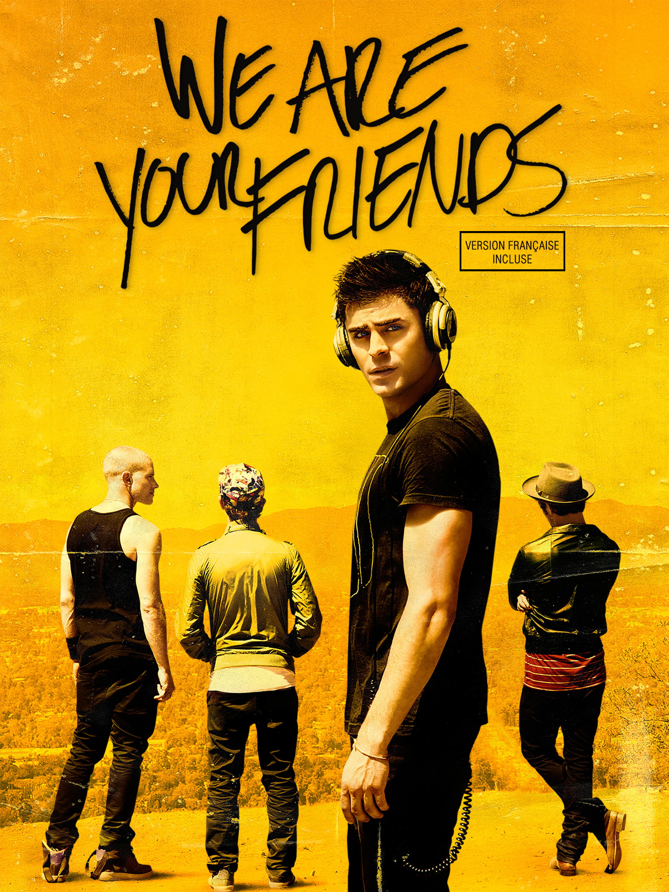

Introduction
We Are Your Friends is a 2015 drama and music film directed by Max Joseph. It follows the story of a young aspiring DJ trying to make it big in the electronic dance music (EDM) scene. The movie stars Zac Efron and explores themes of friendship, ambition, and the realities of the music industry.
Plot
Cole Carter is a 23-year-old aspiring DJ living in the San Fernando Valley with his three best friends. By day, they work odd jobs, but by night, they dream of breaking into the music industry. Cole meets James Reed, an older, successful DJ who takes him under his wing as a mentor. As Cole's career begins to take off, he finds himself falling for James's younger girlfriend, Sophie. This complicated love triangle forces Cole to navigate the difficult balance between loyalty to his friends, his romantic feelings, and his ambition to succeed in the cutthroat world of EDM.
Official Trailer
Movie Poster

Image source: IMDb (imdb.com)
Cast
-
Zac Efron as Cole Carter -
Wes Bentley as James Reed -
Emily Ratajkowski as Sophie -
Shiloh Fernandez as Ollie
Reviews
In my opinion, We Are Your Friends is a visually energetic film with a great soundtrack that captures the vibe of the EDM festival culture. While the plot follows a somewhat predictable coming-of-age formula, the performances by Zac Efron and Wes Bentley are engaging. It is an entertaining watch for anyone interested in music, though it may not offer a deep dive into the actual craft of DJing.